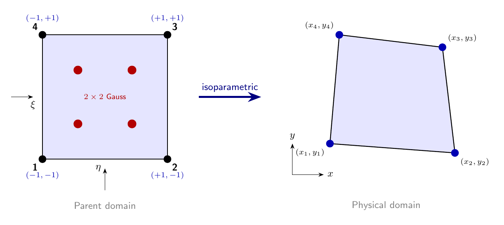
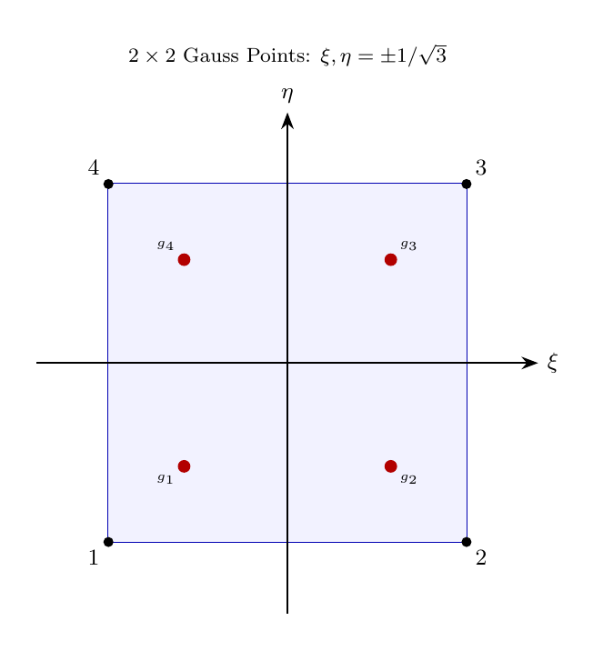

2D Isoparametric Quadrilateral Elements#
This chapter explains the 4-node bilinear quadrilateral used throughout
femlabpy. The math is standard, but the focus here is on how the source code
organizes the parent-space derivatives, Jacobian solve, strain recovery, and
global assembly.
The implementation in src/femlabpy/elements/quads.py
uses a consistent set of array conventions:
Xeis the element coordinate array with shape(4, 2)for a Q4 element.Gestores the material row, usually[E, nu]or[E, nu, type, t].Solid-mechanics displacement vectors are ordered
[u1, v1, u2, v2, u3, v3, u4, v4].Scalar potential kernels reuse the same geometry with one DOF per node.
Bilinear shape functions#
{kind=link}

Figure 5.1: Isoparametric mapping from parent domain [−1,1]² to physical Q4 element. Gauss points shown as red dots.#
The parent domain is the square [-1, 1] x [-1, 1]. The four bilinear shape
functions are the tensor product of 1D linear Lagrange polynomials:
These functions are used for both geometry and field interpolation. That is the reason the element is called isoparametric.
The source computes derivatives in parent coordinates with _q4_dN(r_i, r_j, nnodes). For the public Q4 routines, nnodes is 4, but the helper also
supports the derivative layout used by the serendipity Q8 branch in the same
module.
Isoparametric mapping and the Jacobian#
For a given point \((\xi, \eta)\) in the parent domain, the physical coordinates are interpolated using the same shape functions:
Jacobian matrix derivation#
To relate parent and physical derivatives, we use the chain rule:
where the Jacobian matrix is:
In matrix form: \(\mathbf{J}^T = \frac{\partial \mathbf{N}}{\partial \boldsymbol{\xi}} \cdot \mathbf{X}_e\)
where \(\frac{\partial \mathbf{N}}{\partial \boldsymbol{\xi}}\) is the \(2 \times 4\) matrix of parent derivatives.
Computing physical derivatives#
The shape function derivatives in physical coordinates are found by solving:
The source uses np.linalg.solve(Jt, dN) where Jt = dN @ Xe, which:
Avoids explicit inverse computation
Is numerically stable for distorted elements
Area transformation#
The determinant \(|\mathbf{J}|\) transforms area elements:
This scaling factor appears in all integration formulas.
Strain-displacement matrix#
For plane stress and plane strain, the strain vector is
and the element displacement vector is
The source builds the B matrix with a small loop over nodes:
def _q4_B(dN):
nnodes = dN.shape[1]
B = np.zeros((3, 2 * nnodes), dtype=float)
for k in range(nnodes):
B[0, 2 * k] = dN[0, k]
B[1, 2 * k + 1] = dN[1, k]
B[2, 2 * k] = dN[1, k]
B[2, 2 * k + 1] = dN[0, k]
return B
That layout is deliberate:
row 0 maps
du/dxrow 1 maps
dv/dyrow 2 maps the engineering shear strain
du/dy + dv/dx
The same helper is reused in the scalar and elastoplastic kernels, so the element math stays in one place.
Gauss-Legendre integration#
{kind=link}

Figure 5.2: The \(2 \times 2\) Gauss-Legendre quadrature points in the parent domain \([-1,1]^2\).#
Mathematical foundation#
The element integrals cannot be evaluated analytically for general quadrilaterals, so we use Gauss-Legendre quadrature:
The Gauss points \(\xi_i\) are the roots of Legendre polynomials, and the weights \(w_i\) are chosen to integrate polynomials of degree \(2n-1\) exactly.
2-point rule derivation#
For the 2-point rule, we require exact integration of cubic polynomials. The points and weights are:
Proof: These values can be derived by requiring exact integration of \(1, \xi, \xi^2, \xi^3\):
From \(\int_{-1}^{1} 1 \, d\xi = 2\): \(w_1 + w_2 = 2\)
From \(\int_{-1}^{1} \xi \, d\xi = 0\): \(w_1 \xi_1 + w_2 \xi_2 = 0\)
From \(\int_{-1}^{1} \xi^2 \, d\xi = \frac{2}{3}\): \(w_1 \xi_1^2 + w_2 \xi_2^2 = \frac{2}{3}\)
From \(\int_{-1}^{1} \xi^3 \, d\xi = 0\): \(w_1 \xi_1^3 + w_2 \xi_2^3 = 0\)
Solving with symmetry (\(\xi_2 = -\xi_1\), \(w_1 = w_2\)): \(\xi_1 = -1/\sqrt{3}\), \(w_1 = 1\).
Application to element stiffness#
The Q4 stiffness matrix is:
Transforming to parent coordinates:
With \(2 \times 2\) Gauss quadrature (4 points total):
The source stores the Gauss points in _q4_gauss_points():
r = np.array([-1.0, 1.0], dtype=float) / np.sqrt(3.0)
w = np.array([1.0, 1.0], dtype=float)
Implementation in femlabpy#
The public Q4 routines follow the same pattern:
compute parent derivatives
map them to physical derivatives with
np.linalg.solvebuild
Bevaluate strains and stresses
accumulate element contributions
keq4e#
The stiffness routine keeps the implementation close to the math:
Xe = as_float_array(Xe)
props = as_float_array(Ge).reshape(-1)
plane_strain = props.size > 2 and int(props[2]) == 2
D = _plane_elastic_matrix_2d(props, plane_strain=plane_strain)
t = props[3] if props.size > 3 else 1.0
nnodes = Xe.shape[0]
r, w = _q4_gauss_points()
Ke = np.zeros((2 * nnodes, 2 * nnodes), dtype=float)
for i in range(2):
for j in range(2):
dN = _q4_dN(r[i], r[j], nnodes)
Jt = dN @ Xe
dN_global = np.linalg.solve(Jt, dN)
B = _q4_B(dN_global)
Ke += w[i] * w[j] * t * (B.T @ D @ B) * np.linalg.det(Jt)
The useful point is that the same code path works for plane
stress and plane strain. Only the constitutive matrix D changes.
qeq4e#
The stress recovery routine follows the same Gauss loop, but it stores the element history in tables:
Sehas shape(4, 3)and stores[sxx, syy, txy]Eehas shape(4, 3)and stores[exx, eyy, gxy]qehas shape(8, 1)and stores the equivalent nodal internal force
The code updates the Gauss-point arrays one point at a time:
gp = _q4_gp_index(i, j)
dN = _q4_dN(r[i], r[j], nnodes)
Jt = dN @ Xe
dN_global = np.linalg.solve(Jt, dN)
B = _q4_B(dN_global)
Ee[gp] = (B @ Ue).ravel()
Se[gp] = Ee[gp] @ D
qe += w[i] * w[j] * t * (B.T @ Se[gp].reshape(-1, 1)) * np.linalg.det(Jt)
That structure is useful because the Gauss-point values are kept in element order, so the caller can inspect them without reconstructing any connectivity.
Global assembly#
The global wrappers kq4e and qq4e are thin loops around the element
kernels. Each row of T is treated as [n1, n2, n3, n4, mat_id], and the
material row is selected with topology_property(row) before the local matrix
is assembled with assmk or assmq.
This makes the data flow explicit:
kq4ebuilds the global stiffness matrixqq4ebuilds the global internal force vector and stores element stressesthe same topology and material conventions are used in both
Scalar potential version#
The scalar kernels keq4p, qeq4p, kq4p, and qq4p use the same geometry
and the same Gauss integration strategy, but with one DOF per node.
The only real differences are:
the gradient operator is
2 x 4instead of3 x 8the element conductivity matrix is
4 x 4the optional reaction coefficient
badds a consistent reaction term inkeq4p
This is why the scalar and solid implementations can live in the same module: they share the geometry and quadrature, but differ only in the constitutive and DOF layout.
Summary#
The Q4 element in femlabpy is a good example of the library’s implementation
style:
keep the low-level geometry in small helpers
evaluate derivatives with
np.linalg.solvereuse the same Gauss loop for stiffness and recovery
keep global assembly separate from element math
That split keeps the code readable and makes it easier to reason about the exact shape of each array at every stage.
Appendix: Mathematical Foundations#
B.1 Shape function tensor product construction#
The bilinear shape functions are constructed as tensor products of 1D linear Lagrange polynomials:
where \((I, J)\) is the 1D index pair corresponding to node \(i\).
1D linear Lagrange polynomials:
Verification of partition of unity:
Verification of Kronecker delta property:
At node 1 (\(\xi=-1, \eta=-1\)):
B.2 Jacobian positive definiteness#
For a valid element, the Jacobian determinant must be positive at all Gauss points:
Physical interpretation: The Jacobian determinant represents the ratio of physical to parent area:
If \(|\mathbf{J}| \leq 0\) at any point, the element is either inverted or has zero area, making it invalid.
For a rectangular element with corners at \((0,0), (a,0), (a,b), (0,b)\):
The total area is:
B.3 Gauss quadrature error analysis#
For \(n\)-point Gauss-Legendre quadrature, the integration is exact for polynomials up to degree \(2n-1\).
Error bound: For a function \(f \in C^{2n}[-1,1]\):
for some \(\xi \in (-1, 1)\).
For Q4 with 2×2 integration:
The integrand \(\mathbf{B}^T \mathbf{D} \mathbf{B} |\mathbf{J}|\) involves:
\(\mathbf{B}\): linear in \(\xi, \eta\) (from shape function derivatives)
\(|\mathbf{J}|\): bilinear in \(\xi, \eta\)
Product degree: \(1 + 1 + 2 = 4\) (approximately)
The 2-point rule integrates degree 3 exactly, so there is a small integration error for distorted elements. This is acceptable for most practical applications.
B.4 Rank and eigenvalue analysis#
The Q4 stiffness matrix has:
Size: \(8 \times 8\)
Rank: 5 (for 2D elasticity)
Null space: 3 rigid body modes (2 translations + 1 rotation)
Eigenvalue structure:
For a unit square with \(E=1\), \(\nu=0.3\), the stiffness eigenvalues are:
This confirms proper element formulation—exactly 3 zero eigenvalues for 2D.
B.5 Patch test verification#
The element must pass the constant strain patch test, which verifies that a mesh of elements can exactly represent a constant strain field.
Conditions: For a mesh under prescribed boundary displacements that produce constant strain \(\boldsymbol{\varepsilon}_0\):
All elements should compute \(\boldsymbol{\varepsilon} = \boldsymbol{\varepsilon}_0\)
Internal nodal forces should cancel at shared nodes
Reaction forces should equal applied loads
Mathematical requirement: The shape functions must be able to reproduce linear displacement fields exactly:
For bilinear Q4 elements, this is satisfied since:
These are the completeness conditions for first-order accuracy.